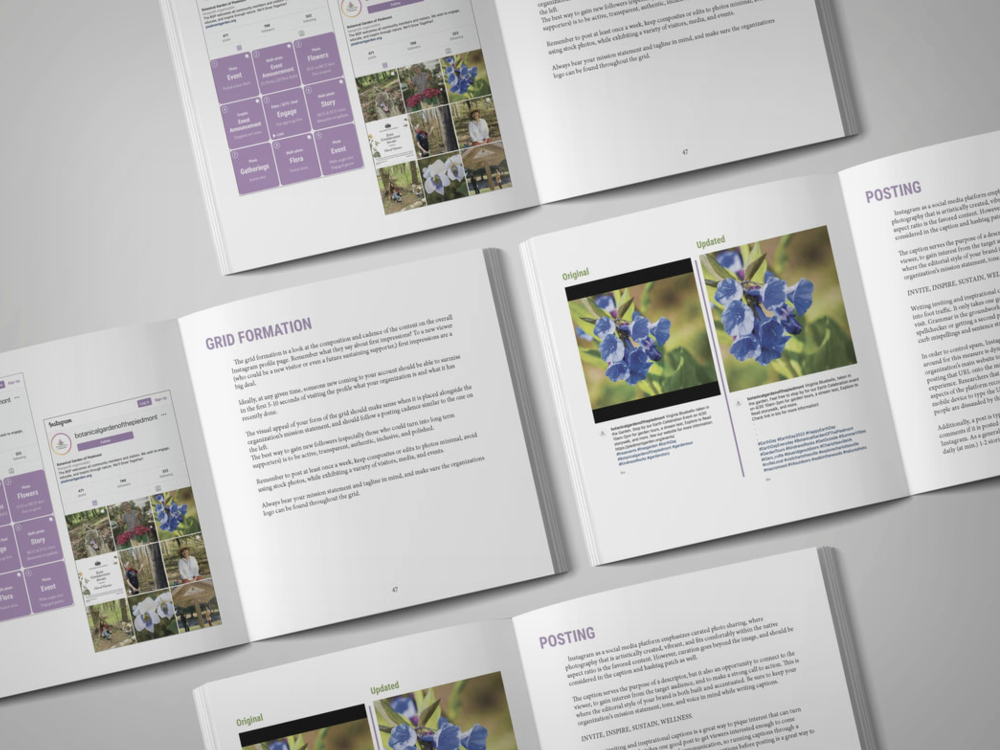
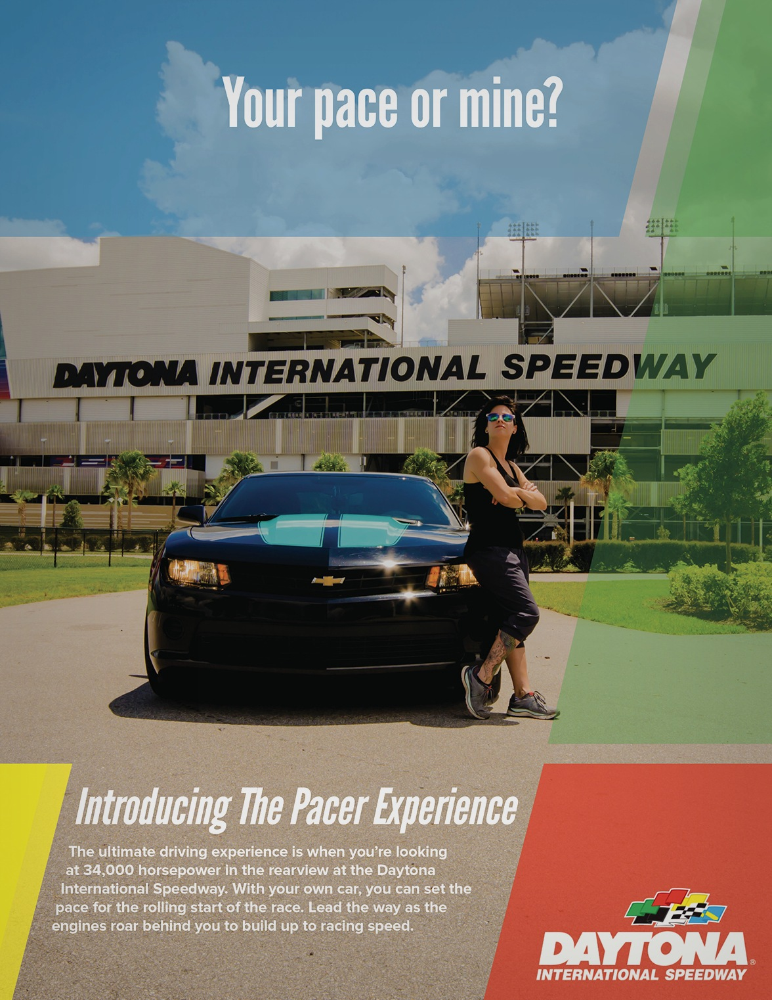
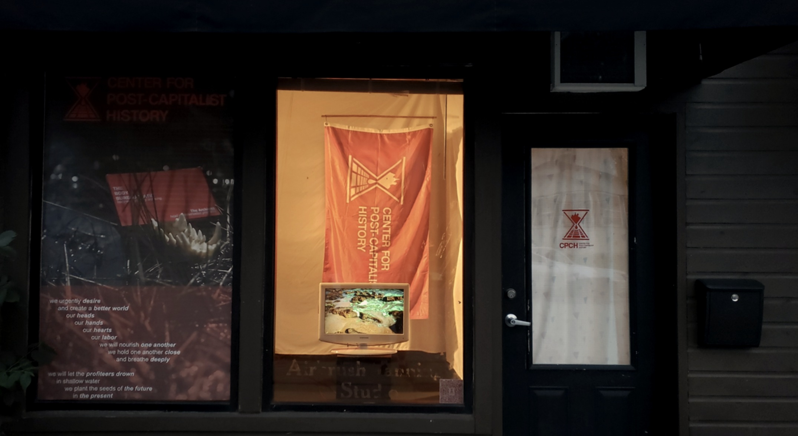
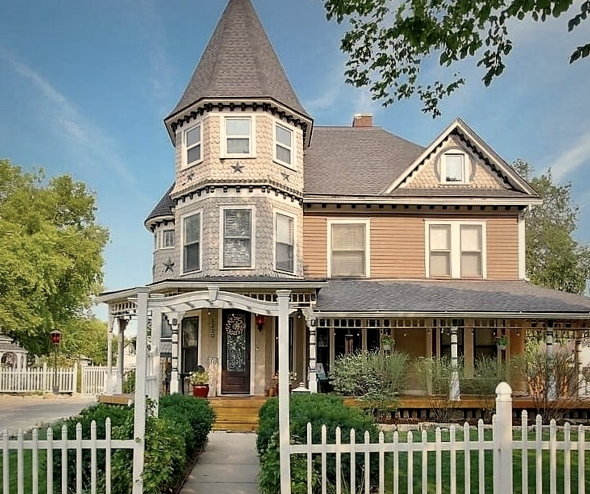

Look closer first,
Build bolder after.
20+ years across brand identity, editorial, live broadcast, and print. WWE's live air. NASCAR's race-day floor. Nonprofits where every dollar had to show. The throughline is always the same: the answer is already there. The work is finding it.





& Logo Design
Full visual identities from concept to delivery: mark, wordmark, color system, and usage guidelines. Built to last.
Collateral
Business cards, packaging, signage, event materials. Print design that holds up in the real world and looks good doing it.
& Lettering
Custom type treatments, display lettering, and type-forward layouts. Words that look as good as they read.
Digital Investigations
Open-source intelligence gathering and digital footprint analysis. Pattern recognition applied to people, orgs, and online presence.
Design
Training materials, internal campaigns, and visual communication for security teams. Making the complex clear. Actually engaging.
Security & Tech
Brand and visual identity work specifically for security companies, tools, and researchers. You speak the language. I make it look the part.